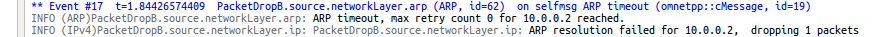

Several network problems manifest themselves as excessive packet drops, for example poor connectivity, congestion, or misconfiguration. Poor connectivity in a wireless network can cause senders to drop unacknowledged packets after the retry limit is exceeded. Congestion can cause queues to overflow in a bottleneck router, again resulting in packet drops. Visualizing packet drops helps identifying such problems in simulations, thereby reducing time spent on debugging and analysis.
This example contains several simulation models demonstrating typical causes of packet drops.
INET version: 3.6
Source files location: inet/showcases/visualization/packetdrop
Packet drops can be visualized by including a PacketDropVisualizer module in the simulation. The PacketDropVisualizer module indicates packet drops by displaying an animation effect at the node where the packet drop occurs. In the animation, a packet icon gets thrown out from the node icon, and fades away.
The visualization of packet drops can be enabled with the visualizer's displayPacketDrops parameter. By default, packet drops at all nodes are visualized. This selection can be narrowed with the nodeFilter, interfaceFilter and packetFilter parameters.
One can click on the packet drop icon to display information about the packet drop in the inspector panel.
Packets are dropped for the following reasons:
In this section we present an example for demonstrating packet drops due to queue overflow. This simulation can be run by choosing the QueueFull configuration from the ini file. The network contains a bottleneck link where packets will be dropped due to an overflowing queue:

It contains a StandardHost named source, an EtherSwitch, a Router, an AccessPoint, and a WirelessHost named destination. The source is configured to send a stream of UDP packets to destination. The packet stream starts at two seconds, after destination got associated with the access point. The source is connected to the etherSwitch via a high speed, 100 Gbit/s ethernet cable, while the etherSwitch and the router is connected with a low speed, 10 MBit/s cable. This creates a bottleneck in the network, between the switch and the router. The source host is configured to generate more UDP traffic than the 10Mbit/s channel can carry. The cause of packet drops in this case is that the queue in etherSwitch fills up.
The queue types in the switch's ethernet interfaces are set to DropTailQueue, with a default length of 100 packets (by default, the queues have infinite lengths). The packets are dropped at the ethernet queue of the switch.
The visualization is activated with the displayPacketDrops parameter. The fade out time is set to three seconds, so that the packet drop animation is more visible:
*.visualizer.*.packetDropVisualizer.displayPacketDrops = true *.visualizer.*.packetDropVisualizer.fadeOutTime = 3s
When the simulation is run, the UDP stream starts at around two seconds, and packets start accumulating in the queue of the switch. When the queue fills up, the switch starts dropping packets. This is illustrated in this animation:
Here is the queue in the switch's eth1 interface, showing the number of packet drops:

This log excerpt shows the packet drop:
In this example, a host tries to ping a non-existent destination. The configuration for this example is ArpResolutionFailed in the ini file. Packets will be dropped because the MAC address of the destination cannot be resolved. The network for this configuration is the following:

It contains only one host, an AdhocHost.
The host is configured to ping the IP address 10.0.0.2. It will try to resolve the destination's MAC address with ARP. Since there are no other hosts, the ARP resolution will fail, and the ping packets will be dropped.
The following animation illustrates this:
This excerpt shows this in the log:
In this example, packet drops occur due to two wireless hosts trying to communicate while out of communication range. The simulation can be run by selecting the MACRetryLimitReached configuration from the ini file. The configuration uses the following network:

It contains two AdhocHosts, named source and destination. The hosts' communication ranges are set up so they are out of range of each other. The source host is configured to ping the destination host. The reason for packet drops in this case is that the hosts are not in range, thus they can't reach each other. The source transmits the ping packets, but it doesn't receive any ACK in reply. The source's MAC module drops the packets after the retry limit has been reached.
This is illustrated in the following animation:
This looks like the following in the logs:
In this example, packets will be dropped due to the lack of static routes. The configuration is NoRouteToDestination in the ini file. The network is the following:

It contains two connected StandardHosts. The IPv4NetworkConfigurator is instructed not to add any static routes, and host1 is configured to ping host2.
The ping packets can't be routed, thus the IP module drops them. This is illustrated on the following video:
Here is also a log excerpt illustrating this:

In this example (InterfaceNotConnected configuration in the ini file), packet drops occur due to a disabled wired connection between the hosts:

It contains two StandardHosts, connected with an ethernet cable. The ethernet cable is disabled. Additionally, host1 is configured to ping host2.
Since the cable between the hosts is disabled, the MAC module is unable to send the packets, and drops them. This is illustrated on the following animation:
Because there is no connection between the nodes, all packets are dropped.
The following log except shows this: